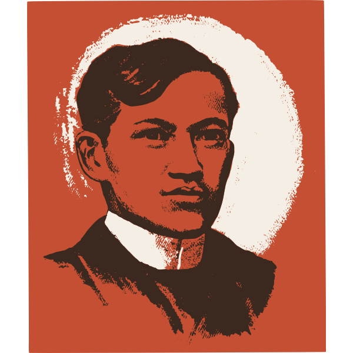
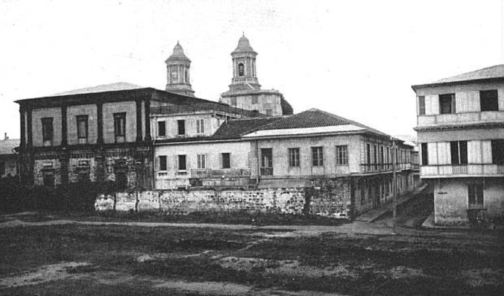
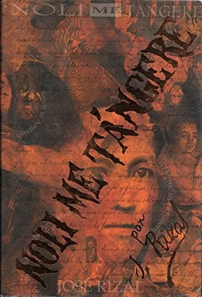
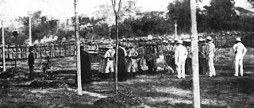

The Life of a National Hero

Birth in Calamba, Laguna
José Protasio Rizal Mercado y Alonso Realonda was born the seventh of eleven children to Francisco Engracio Rizal Mercado and Teodora Morales Alonso Realonda, a family of mixed Chinese, Spanish, and Tagalog descent.

Ateneo Municipal de Manila
Rizal enrolled in the Ateneo Municipal de Manila, excelling in academics, literature, painting, sculpture, and poetry. He graduated as one of nine students awarded the title of Sobresaliente — the highest academic honor.
Journey to Europe — Madrid & Paris
Rizal secretly left the Philippines to study in Spain. He enrolled at the Universidad Central de Madrid, earning his licentiate in medicine in 1884. He also took courses in philosophy, literature, and the fine arts.

Noli Me Tangere Published
Rizal published his first novel Noli Me Tangere in Berlin, Germany. The novel exposed the abuses of the Spanish colonial government and the Catholic clergy, igniting a fire of nationalism across the Philippine archipelago.

El Filibusterismo Published
The sequel to Noli Me Tangere, El Filibusterismo, was published in Ghent, Belgium. Darker and more politically charged than its predecessor, the novel depicted a revolution against colonial oppression and stirred deeper unrest.

Martyrdom at Bagumbayan
At the age of 35, Rizal was executed by firing squad at Bagumbayan Field, now known as Luneta Park in Manila. He faced death calmly, turning to face the rising sun. His sacrifice ignited the Philippine Revolution and cemented his legacy as a national hero.